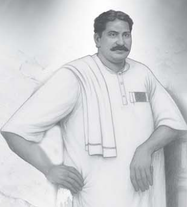

Varkey Asan (Anapapy)
The life of Varkey Varghese, bodyguard to St. Dionysius of Vattasseril, the luminary of the Malankara Church, remains a source of enduring sorrow for the Church. He was the only son of Varkey Asan of the Panickerveettil family, near Karackal St. George Church in Peringara, near Thiruvalla, and of Mariamma of the Karackal Chakkumveettil family. He was popularly known as “Anapapy” (aana meaning elephant). Moved by devotion to the Church and encouraged by such eminent figures as Mr. K. M. Mammen Mappila, Mr. K. C. Eapen and Rev. P. T. Geevarghese Kathanar, he was appointed chief of the bodyguards of St. Dionysius of Vattasseril, who guided the Church through its crises.
Anapapy was well educated and proficient in martial arts; he was a teacher, a devoted son of the Church and an exceptional wrestler. His assassins, together with the Patriarchal partisans who had commissioned them, were governed by a single calculation: unless Varkey Varghese were eliminated, St. Dionysius of Vattasseril could not be removed. Consequently, Anapapy, then only thirty-five, was cruelly killed as the result of a conspiracy. It is undisputed that he was killed on Meenam 18, 1087 (March 31, 1912), and that the following day was a Monday. Many historians have attempted to establish his date of birth without success. True to his name, he was of giant physique, and he lived under constant threat of death.
Anapapy studied up to matriculation (SSLC) and, like his father and grandfather, began his working life as a teacher, serving in a government lower primary school near Kallooppara. His family was prosperous, his finances were sound, and his manner of living reflected the standing of the period. His sister Annamma was married to Kochukunju of the renowned Inchakalody family of Chengannur. Anapapy himself married Annamma of the Attupuram family in Peringara. When his wife’s relatives prepared to sell the Attupuram property, he sold his own Karackal land rather than allow others to acquire it, purchased that property and settled there; this is how he came to reside at Attupuram near Peringara.
The historical record notes that he received an order appointing him to a Ranger post in the Excise Department of the Travancore Government, but that he did not take up the post and went to Kottayam instead.
The background
St. Dionysius of Vattasseril held that surrendering the ownership and independence of the Malankara Church to Patriarch Abdulla would amount to a betrayal of the Church. A substantial section of the Church objected to Abdulla’s methods of acquiring wealth and to the practices that had produced laxity within the Church, while another section prepared to support the Patriarch. The Church thus divided into two camps, and the rivalry between the factions reached its height.
The Old Seminary at Kottayam was the seat of the Malankara Metropolitan and the centre of the Church, as well as its principal seminary. Its possession lay with three trustees. The clerical and lay trustees who opposed the Metropolitan devised a means of bringing the seminary wholly under their control, namely the suspension of St. Dionysius of Vattasseril. Konat Mathen Malpan and Akkara C. J. Kurien anticipated that, were the Patriarch to suspend him, the seminary would pass exclusively to them, and the Patriarch carried out the suspension eagerly, as they had intimated.
Police proceedings before the Executive Magistrate were then pending concerning control of the seminary. In that summary case, the suspension offered an easy route to seizing the property. After the Patriarch’s decree arrived, the opposing faction in the case requested the clerical and lay trustees to remove St. Dionysius of Vattasseril. In 1912, however, the First Class Magistrate of the Kottayam Division ruled in favour of the Metropolitan’s own possession. The trustees appealed to the High Court, which held that the seminary was in the joint possession of the three trustees. Following that verdict, attempts to seize the seminary and outbreaks of violence ensued. The lay trustee based in Kottayam sought assistance from prominent local ruffians, and efforts began to eliminate St. Dionysius of Vattasseril. Bodyguards thus became indispensable to the Malankara Metropolitan, and Anapapy (Varkey Asan) was appointed as their chief.
Reports reached the Church that Patriarchal partisans were conspiring against St. Dionysius of Vattasseril in a variety of ways. Many persons from southern parishes such as Thiruvalla, Niranam and Mavelikkara assembled at the Old Seminary, and guards were appointed to ensure that no harm befell him. Anapapy was among those appointed from Thiruvalla, having been sent by K. M. Mammen Mappila (Kochu Mammen Vakil), as the latter stated in his testimony in the Vattippanam case. The effort was led by K. C. Eapen, known as “Kerala Deenabandhu.” As Anapapy departed for Kottayam, K. C. Eapen, the brother of K. C. Mammen Mappila, gave his blessing by tying a kasavu kavani around his neck and draping a ponnada (honorary shawl) over him.
In a 1992 letter to Adv. P. C. Mathew, Divyasree Manalil Yakob Kathanar, secretary to St. Dionysius of Vattasseril, wrote:
“When the opposing faction created trouble in the seminary and some Muslim rowdies began abusing the Metropolitan and harassing him, it was the Thiruvalla leaders who brought Anapapy to protect him.”
Manalil Yakob Kathanar, letter to Adv. P. C. Mathew, 1992
The murder
Anapapy’s assailants intended to intimidate, seize and beat the guards, so that the guards of St. Dionysius of Vattasseril would be isolated and the seminary subsequently captured. A secret conspiracy was hatched by certain irreligious persons possessing physical strength, wealth and influential connections with the authorities. Specifically, on Meenam 18, 1087 (March 31, 1912), at about 6 pm, on the sand-bank of the Meenachil river north of the Old Seminary, near Govindapuram in Kottayam, the first to seventeenth accused formed an unlawful assembly. They were armed with sticks, sword-sticks and pestles or clubs. Knowing that Anapapy’s death was likely, they deliberately beat and crushed his head and body with the sticks, struck him with the clubs and stabbed him with swords (Police FIR).
Under the heading “A Blood Offering for Anapapy,” Fr. Paret recorded the event as follows: on Meenam 18, 1087, Varkey Varghese of Attupuram, Peringara, near Thiruvalla, a great wrestler worthy of the name Anapapy, was offered as a sacrifice on the sand-bank beside the seminary.
At that time Fr. P. T. Geevarghese was deeply engaged in communal affairs. While preparing to leave the Malankara Church and join the Roman Church (he himself stated that this was motivated not by concern for the soul’s safety but by a desire for perfection), he wrote in Girideepam:
“Had such a murder not happened there, one wonders what the readers would now need to be considering. Terrible and unspeakable things could have happened there. Only because the yard of the Old Seminary drank human blood did nothing further happen. Everyone understood that this was the thirst the Syrian community had long had.”
Fr. P. T. Geevarghese, Girideepam
Anapapy’s blood, it may be said, washed away the strife of that age. A man of giant stature, he brought to an end, through the shedding of his own blood, the turmoil that had long been visible within his community. The title “martyr” (rakthasakshi, literally “blood-witness”) applies to him in the most literal sense.
Dr. Dias, the medical officer who first examined Anapapy’s extraordinary physique after the body was brought to the hospital, testified as the 21st witness in the case: “The deceased Varghese was a wrestler and an extraordinary strong man. In my service I have seen very few people with such a large, well-built body.”
In the Anapapy case, the testimony of St. Dionysius of Vattasseril is likewise of considerable significance:
“…I have been living permanently at the Kottayam Syrian Seminary for about four years. I know the dead Pappy. On the evil counsel of some people, certain persons pushed and stabbed Pappy and endangered him; that is what I know. It happened on the sand-bank north of the seminary. Pappy was from Thiruvalla. Pappy came to Kottayam for my protection; the Thiruvalla church people sent him. He first came toward the end of Kumbham. He stayed there 10–15 days and went to his house. Then Pappy came again on the day of the incident, after daybreak [five or six nazhika]. Besides Pappy, there were other people for my protection…”
St. Dionysius of Vattasseril, testimony in the Anapapy case
On Wednesday, April 3, 1912, a report in Malayala Manorama conveyed the details of the murder to the public. It stated that a man named Varkey, who lived with Mar Dionysius of Malankara and his associates, had been severely beaten at the seminary landing by certain Muslims and others “last Saturday around five in the evening” and left near death, and that he died in hospital the following day. The report added that the news could not fail to grieve any human heart. While the people in the seminary had gone in for evening prayer, Varkey, thirsty, unarmed and unsuspecting, had gone to a nearby tea shop, where the men lying in wait ambushed him and beat him senseless.
The cruelty of the act may readily be imagined. By the time he was brought to the hospital, Varkey’s life was practically at an end. The Assistant Surgeon immediately informed the Taluk First Class Magistrate, who attended at once and recorded Varkey’s dying declaration. After his death the Assistant Surgeon examined the body, noting that the tendon of the right heel had been severed and that the skull had been shattered into eleven pieces. These findings were cited in the certificate as the cause of death.
On Monday the body was removed from the hospital. With the sympathy of the congregation of Kottayam Cheriyapally and others, and under escort, it was buried in the Puthenpally cemetery, the burial ground of Kottayam Cheriyapally. The parishioners expressed their sympathy and their helplessness. A memorial stone was later erected there in his name.
Undoubtedly, Varkey Varghese, known as Anapapy, remains an indelible wound in the history of the Malankara Church. This young man laid down his life for a holy man and for his community, and the Church will forever sing the praises of his sacrifice.